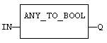
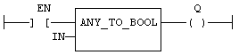

Operator
Converts the input into a Boolean value.
|
Name |
Type |
Description |
|
IN |
ANY |
Input value. |
|
Name |
Type |
Description |
|
Q |
BOOL |
Value converted to Boolean. |
For DINT, REAL and TIME input data types, the result is FALSE if the input is 0. The result is TRUE in all other cases. For STRING inputs, the output is TRUE if the input string is not empty, and FALSE if the string is empty. In LD language, the conversion is executed only if the input rung (EN) is TRUE. The output rung is the result of the conversion. In IL Language, the ANY_TO_BOOL function converts the current result.
Q := ANY_TO_BOOL (IN);

The conversion is executed only if EN is TRUE.
The output rung is the result of the conversion.
The output rung is FALSE if the EN is FALSE.
